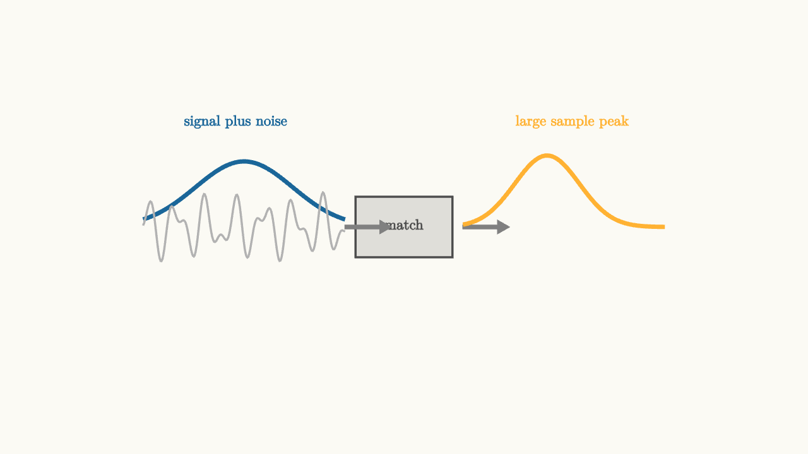

Matched Filters Spend Noise Carefully
A receiver has a hard job. It observes a waveform that has been weakened, delayed, filtered, and mixed with noise. Somewhere inside that waveform is a symbol.
If the receiver knows the pulse shape, it can ask a focused question:
How much of that pulse is present right now?
A matched filter is built to answer that question. It lines up with the expected pulse, multiplies the incoming signal by that shape, and adds the result. In continuous time, that "multiply and add" operation is correlation.

source
background = [0.985, 0.98, 0.955, 1]
camera = Camera(4.8b)
mesh diagram = block {
. stroke{BLUE, 4} ExplicitFunc(|t| 0.78 * exp(-1.5 * (t + 1.9) * (t + 1.9)), [-3.1, -0.7, 180])
. stroke{LIGHT_GRAY, 2} ExplicitFunc(|t| 0.25 * sin(18 * t) + 0.16 * sin(31 * t), [-3.1, -0.7, 220])
. fill{alpha{0.16} DARK_GRAY} stroke{DARK_GRAY, 2} center{[0, 0, 0]} Rect([1.15, 0.72])
. center{[0, 0.03, 0]} color{DARK_GRAY} Text("match", 0.62)
. color{GRAY} Arrow(start: [-0.7, 0, 0], end: [-0.15, 0, 0])
. color{GRAY} Arrow(start: [0.7, 0, 0], end: [1.25, 0, 0])
. stroke{ORANGE, 4} ExplicitFunc(|t| 0.85 * exp(-3.4 * (t - 1.7) * (t - 1.7)), [0.7, 3.1, 180])
. center{[-2.0, 1.25, 0]} color{BLUE} Text("signal plus noise", 0.62)
. center{[2.0, 1.25, 0]} color{ORANGE} Text("large sample peak", 0.62)
}
"matched filter"
play Fade(0.6)For a pulse $p(t)$ in white noise, the matched filter has impulse response
for a decision time $T$. It is the pulse flipped in time and shifted so the filter output peaks at the sampling instant.
The output at the decision time is an inner product:
If the received signal is $r(t)=a p(t)+n(t)$, then
The signal part adds coherently because the filter has the same shape as the pulse. The noise part is random, so it adds less predictably. This choice maximizes signal-to-noise ratio at the sample, under the usual white-noise model.
The geometry of matching
Think of each waveform as a vector. The received waveform is one vector. The expected pulse is another. The matched filter computes how much of the received vector points in the pulse direction.
If the pulse is present with a positive symbol, the projection is positive. If the pulse is present with a negative symbol, the projection is negative. If the waveform is mostly unrelated noise, the projection tends to be small.
This is the same idea as dot products in geometry. A matched filter is a dot product implemented by a filter and a sampler.
source
param alignment = 0.2
background = [0.985, 0.98, 0.955, 1]
camera = Camera(4.8b)
let PulsePair = |alignment, col| block {
. stroke{BLUE, 4} ExplicitFunc(|t| 0.72 * exp(-2.2 * (t + 1.15) * (t + 1.15)), [-3.0, 0.4, 180])
. stroke{col, 4} ExplicitFunc(|t| 0.72 * exp(-2.2 * (t + 1.15 - 1.6 * alignment) * (t + 1.15 - 1.6 * alignment)), [-2.2, 1.8, 180])
}
let Meter = |alignment, col| block {
. stroke{LIGHT_GRAY, 1} Line(start: [-1.5, -1.25, 0], end: [1.5, -1.25, 0])
. fill{alpha{0.22} col} stroke{col, 2} center{[-0.75 + 1.5 * alignment, -1.0, 0]} Rect([0.32, 0.5 + 0.8 * alignment])
. center{[0, -1.65, 0]} color{DARK_GRAY} Text("correlation grows as shapes align", 0.62)
}
"poor alignment"
mesh title = center{[0, 1.58, 0]} color{DARK_GRAY} Text("matching spends noise in one direction", 0.62)
mesh pulses = PulsePair(alignment: $alignment, col: ORANGE)
mesh meter = Meter(alignment: $alignment, col: ORANGE)
play Write(0.8)
play Fade(0.6)
"slide into place"
alignment = 1.0
pulses = PulsePair(alignment: $alignment, col: GREEN)
meter = Meter(alignment: $alignment, col: GREEN)
play Lerp(1.3)
"decision sample"
pulses = block {
. stroke{GREEN, 4} ExplicitFunc(|t| 0.72 * exp(-2.2 * (t + 0.05) * (t + 0.05)), [-2.2, 2.2, 180])
. color{GREEN} Arrow(start: [0.0, -0.85, 0], end: [0.0, 0.68, 0])
. center{[0.55, 0.92, 0]} color{GREEN} Text("sample", 0.62)
}
play Trans(1.0)The parameter controls alignment between the received pulse and the filter's template. When the shapes line up, the correlation peak grows. This is the receiver collecting energy from the whole pulse into one decision value.
Noise bandwidth is the price
Any filter that collects signal also collects noise. The matched filter is optimal because it collects signal in the shape where the signal actually lives. It does not spend noise bandwidth equally everywhere.
If the receiver used a much wider filter, more noise would enter the sample. If it used a mismatched filter, some signal energy would be left on the table. The matched filter balances those costs for the chosen pulse and noise model.
This explains why the receiver filter is tied to the transmitter pulse. Pulse shaping and matched filtering are one design problem, split across two devices.
The decision variable
After the matched filter, the receiver samples once per symbol. For binary PAM, a positive sample means one symbol and a negative sample means the other. For larger constellations, the sample is compared against multiple thresholds or decision regions.
The matched filter does not remove every problem. Timing still matters. If the receiver samples before or after the peak, the collected signal is smaller and neighbor symbols may leak in. Carrier phase still matters for passband systems. Frame alignment still matters for packets.
The matched filter gives the receiver the best possible scalar evidence for one symbol, assuming the pulse and timing are known. The following lessons explain how to design pulses and recover the timing needed to make that sample meaningful.